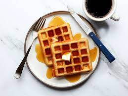

Waffles

Description
Waffles from scratch. Best topped with Canadian Maple Syrup.
Ingredients
- 2 eggs
- 2 cups all-purpose flour
- 1 3/4 cups milk
- 1/2 cup vegetable oil
- 1 tablespoon white sugar
- 4 teaspoons baking powder
- 1/2 teaspoon vanilla extract
- 1/4 teaspoon salt
Steps
- Preheat waffle iron. Beat eggs in large bowl with hand beater until fluffy. Beat in flour, milk, vegetable oil, sugar, baking powder, salt and vanilla, just until smooth.
- Spray preheated waffle iron with non-stick cooking spray. Pour mix onto hot waffle iron. Cook until golden brown. Serve hot.